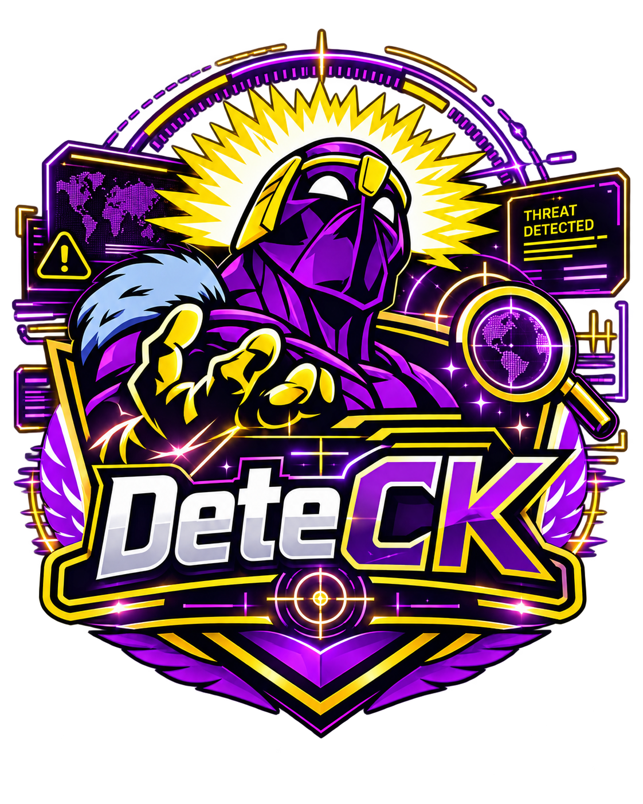

Segurança digital acessível
DeteCK
Detecte antes que aconteça.
by Conscious Knowledge

É Éric Estrela Vieira
G Gabriel Heanna dos Reis
G Gustavo Oliveira dos Santos
P Paulo Henrique de Lima Silva
P Pedro Alcantara dos Santos Fialho
T Thiago Wilson Vieira Serbino
02
Simulação
O problema
Mensagens convincentes demais
01
Urgência artificial
A mensagem reduz o tempo para pensar.
02
Pedido sensível
A ação envolve dados que merecem proteção.
03
Endereço estranho
O domínio, endereço principal do site, não confirma a origem.
04
Remetente difícil de verificar
Nome conhecido e endereço real não combinam.
Muitas ameaças parecem normais no primeiro olhar.
03
Por que é difícil
A decisão acontece sob pressão
A dúvida aparece antes de existir uma resposta clara. Nesse intervalo, quatro forças disputam a atenção do usuário.
DECIDIR?antes do clique
Linguagem conhecida
A mensagem imita bancos, lojas, escolas ou pessoas próximas.
Urgência e ameaça
O medo de perder a conta ou uma oportunidade encurta a reflexão.
Poucos sinais visíveis
O usuário não sabe quais detalhes do remetente e do endereço verificar.
Dúvida sem orientação
Mesmo com desconfiança, falta um próximo passo seguro e simples.
04
01
02
03
04
A proposta
Clareza entre a dúvida e a ação
Analisar
Recebe texto, link ou imagem suspeita sem pedir senha nem código.
Entender
Destaca os sinais que merecem atenção e explica cada motivo.
Decidir
Recomenda a próxima ação segura, com prioridade para canais oficiais.
Aprender
Ensina o raciocínio para que o usuário reconheça sinais no futuro.
FinCKpreço antes da compra
DynamiCKerro antes do próximo passo
DeteCKameaça antes da confiança
05
Saída
Como funciona
Entrada, sinais e diagnóstico explicado
TTextoMensagem copiada
LLinkEndereço recebido
IImagemCaptura de tela
QQR CodeEvolução planejada
DETE
CK
remetente
urgência
domínio
pedido sensível
contexto
ação solicitada
CK
Diagnóstico explicado
O DeteCK apresenta um nível de atenção, mostra os sinais encontrados e indica como confirmar a origem.
Resultado: apoio à decisão, nunca uma sentença definitiva.
06
✓
!
×
Resposta vaga
Resposta DeteCK
Diagnóstico e diferencial
O nível de risco sempre vem com um motivo
Risco baixo
Poucos sinais de alerta. Ainda assim, confirme pedidos sensíveis.
Atenção
Há elementos inconsistentes que exigem verificação adicional.
Risco elevado
Vários indícios recomendam interromper a ação e confirmar a origem.
“É golpe.”
Não mostra o raciocínio e não ensina o usuário a verificar a próxima mensagem.
Atenção: três sinais encontrados
A mensagem cria urgência, solicita um dado sensível e usa um endereço não confirmado. Não clique. Abra o canal oficial manualmente e verifique o pedido.
Nenhuma análise garante que um conteúdo é 100% seguro.
07
01
02
03
04
05
06
07
Autonomia do usuário
O que verificar antes de agir
Uma sequência segura troca a reação imediata por passos simples e reversíveis.
Pare antes do clique
Urgência pede mais atenção, não mais velocidade.
Confira o remetente
Compare o nome exibido com o endereço completo.
Observe o domínio
Leia o endereço principal do site sem abrir o link.
Proteja dados sensíveis
Não informe senha, código, documento ou dado bancário.
Abra o canal oficial
Digite o endereço conhecido ou use o aplicativo oficial.
Confirme por outro canal
Fale com a pessoa ou instituição por um contato já conhecido.
Denuncie ou bloqueie quando necessário
Depois de confirmar o risco, use as ferramentas da plataforma.
08
1 · Entrada fictícia
2 · Sinais
3 · Recomendação
Simulação completa
Ameaça, sinais e decisão segura
Mensagem recebida
“Sua conta será bloqueada hoje. Confirme agora pelo link.”
O que chamou atenção
Urgência“hoje” reduz o tempo de avaliação
Ameaçao bloqueio provoca medo de perda
Link não confirmadoa origem não aparece de forma confiável
Próxima ação
Não clique.
Acesse manualmente o aplicativo ou site oficial. Procure o aviso dentro do canal conhecido antes de responder.
O endereço recebido não precisa ser aberto para ser verificado.O DeteCK identifica indícios. Ele não prova sozinho que a mensagem é um golpe.
09
Laboratório
Limites
Próximos passos
Aprendizado e responsabilidade
Laboratório, limites e evolução
Aprender com situações simuladas
O usuário investiga uma mensagem e recebe uma explicação para cada escolha.
Desafio fictício
Qual detalhe merece ser verificado primeiro?
remetentedomíniolinksenhaurgênciainconsistência
O produto pode errar
- Não garante segurança.
- Não pede senhas ou códigos.
- Não substitui canais oficiais.
- Explica indícios, sem culpar a vítima.
Um histórico futuro reuniria dados sensíveis e exigiria proteção e consentimento.
Evolução planejada
- Leitura de QR Codecomo recurso futuro
- Modo para escolascom situações por faixa de aprendizado
- Biblioteca de exemploscom padrões explicados
Éric Estrela VieiraGabriel Heanna dos ReisGustavo Oliveira dos Santos
Paulo Henrique de Lima SilvaPedro Alcantara dos Santos FialhoThiago Wilson Vieira Serbino
DeteCK Capa
01 / 10
Slide 1 de 10, Capa